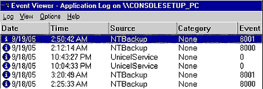

This procedure describes how to open the Event Viewer to check the Windows Event Log for unexpected shutdown events and to provide event explanations.
Open the Event Viewer to check the Windows Event Log for unexpected shutdown events and to provide event explanations. The Event Viewer can assist in identifying problems occurring in the user interface or on the PC hard drive.
Open the Event Viewer.
For Windows XP console PC:
Press the
Windows key, and then select
Start > Run
Note: Alternate path to open the Event Viewer: press the
Windows key, and then select
Programs
> Administrative Tools > Event Viewer.
Enter
eventvwr in the
Open dialog box, and then select
OK to open the
Event Viewer window.
Note: For Access 2: If 6008 events are listed, educate the operator about the negative effects of this action and the recommended methods to reboot.
Select the
System Event Log, and then review the events for possible problems.
Figure 123: DxI example

Note:
Double-click on an event to open an
Event Details pop-up window.